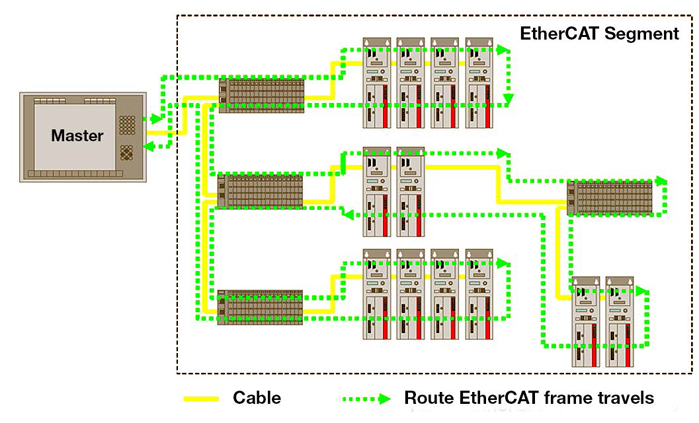

So far we’ve learned that bits & bytes are our alphabet, analog/digital signals are our words, and data buses are the methods of transport. But we’re still not ready to start conversations without any rules.
Communication protocols are basically grammar to our language of signals. They’re the rules of the road for the signal world, deciding who gets to speak when, how messages are packaged, and how each device knows which ones are meant for it.
Modern robots and systems almost always use serial communication (transmitting bit by bit sequentially over a wire). That’s why the protocols we use are called serial protocols, and they come in a few different flavors that are useful in different situations.
UART
UART, or Universal Asynchronous Receiver-Transmitter, is a type of serial protocol consisting of 2 wires: one for sending data, and the other for receiving data between two devices. Those two agree on a baude rate, which is the speed of the signal being transmitted. UART is pretty convenient when you only have two devices to chat like a laptop talking to an Arduino, but it doesn’t scale as well as other protocols when we introduce more devices.

Two musicians vibing
UART protocol
I like to think of UART as 2 people jamming out casually. No sheet music, no conductor, just agreeing beforehand on the tempo. As long as both stick to the same speed, the song stays in sync. But if you add a 3rd person things might get complicated.
Digital Clocks
The next serial protocols I’ll talk about are synchronous, meaning they have things called digital clocks in them. Clocks provide a steady timing signal that all devices on the bus follow so that everyone agrees when to send or read each bit. So instead of constantly being on alert for data, devices can ‘check in’ at certain clock ticks to make communication more reliable and efficient.
Digital clocks work by sending a repeating square wave going from low (0) to high (1) at a set frequency, usually at the rate of millions or billions of times per second. Each time the signal goes from low to high, or from high to low, is what’s called the rising or falling edge, respectively. Each edge is the ‘tick’ that lets devices know ‘shoot now I should check in and either read or write a bit’. It's like a metronome where each click is a signal for each instrument to know when to play each note.
I²C
I²C (Inter-Integrated Circuit) is a serial protocol that also only uses two wires, but unlike UART, one wire is a clock (SCL) and the other is for data (SDA). One device acts as the master, generating the clock and controlling when communication happens.. Every other device on the bus has a unique address, so the master knows exactly who it's talking to. I²C is pretty handy since you can connect a bunch of different devices and only need to use 2 wires (being neat and tidy is really helpful in complex systems). However the more devices you add, the slower I2C gets as the bus starts to get crowded. I²C is pretty commonly used for sensors and small peripheral devices in robots where efficiency matters more than raw speed.
A conductor & choir

I²C protocol
Continuing the musical metaphor, I²C is basically a choir with a conductor. Everyone shares the same sheet music stand (the two wires), but only sing when the conductor points to them. It's neat and efficient, but as we add more and more vocalists, the conductor has to work harder to keep everyone on beat.
SPI
SPI (Serial Peripheral Interface) takes things to the next level. It uses a shared clock with two data lines, plus a special "attention" line for each device known as chip select. This way, the master can decide who it wants to talk to without anyone chiming in. SPI is fast and reliable and it's not necessarily a digital burden to add more devices, but it does require your to add more wires which can get messy if you're not careful.

Rock band with in-ear monitors
SPI protocol
SPI is a rock band. The drummer keeps time (the clock) and each musician wears their own in-ear monitor (chip select). The bandleader (master) can cue each instrument directly, and the result is fast, crystal-clear coordination. But the downside is there are cables running everywhere on stage that the lead guitarist will definitely trip on during his duckwalk.
The Future of Comms
UART, I2C, and SPI have been around for decades, long before robots started packing sensors, high-speed cameras, and advanced processors. They still work very well for simple low-level tasks (and are still used for that purpose in robots), but they weren’t really designed for the complexity that modern robots demand.
Newer protocols used with robots are built with scalability and real-time performance in mind, which is an absolute essential when a robot has multiple subsystems all talking at once.
CAN
CAN (Controller Area Network) is a serial protocol that was originally designed for cars, but now it’s used in a plethora of robots (and robot cars, yes). Instead of one master being in charge, any device on the bus can start talking when it needs to. If two try to talk at the same time, there’s a built-in priority system that decides who gets the floor without crashing the whole conversation. It’s not the fastest protocol, but it is perfect for environments where safety matters more than speed.
I couldn’t really think of a musical metaphor here, but CAN is like a group chat where everyone can message at once, but the chat app makes sure only one person’s message shows up at a time. If two people start typing together, the one with higher priority gets sent first, and the other ‘politely’ waits. It keeps things orderly (and makes your friends think before they text)
EtherCAT
EtherCAT (Ethernet for Control Automation Technology) is an industrial-grade serial protocol built for speed. It’s essentially using Ethernet (which in of itself is a type of serial protocol) to connect all your devices together for excellent real-time performance. Data travels together in a long chain of devices, with each device picking which data it needs while sending off the rest in a continuous flow.
ROS 2
Oh boy it’s time to get into ROS 2 (Robot Operating System 2). ROS 2 isn’t a traditional wire-level protocol like the others, it’s actually a software framework that was designed for developers making robots. ROS2 uses a communication standard called the Data Distribution Service (DDS), which lets different parts of a robot publish (send) and subscribe (receive) messages. It’s open-source, scalable, and designed for modern robots with sensors, processors, and actuators, all of which need to share data without stepping on each other’s toes. We’ll definitely dive more into ROS2 in future lessons - most companies making robots use either or have something similar to it.

yeah that was a lot
This lesson sorta turned out to be just me listing all these protocols and what they're good for. In reality, all of these protocols deserve a lot more than a few sentences, but we'll have lessons dedicated to each of them in the future. It's important to know how they basically function, but using them is a whole other story.